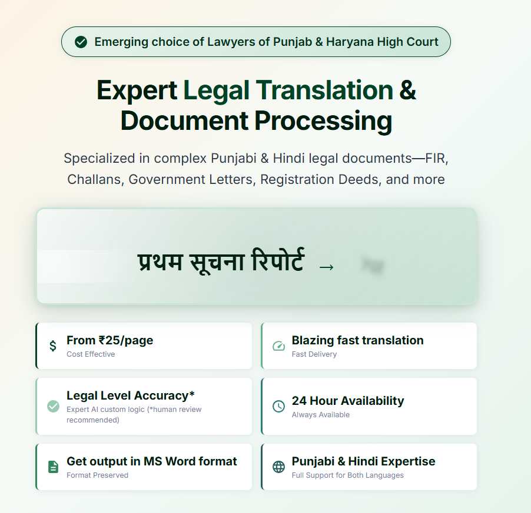

A System That Hasn't Changed in Decades
Walk into any district court complex in Punjab or Haryana and you'll find them — rows of typists sitting outside courtrooms, surrounded by stacks of Punjabi and Hindi documents waiting to be translated into English. FIRs, Challans, Court Orders, Government Letters, Revenue Records. The legal system runs on these documents, and English translations are required at nearly every stage of proceedings.
For decades, this translation work has been handled the same way: a lawyer hands over the document, the typist reads through it, and types out an English version — sometimes over hours, sometimes over days. It's a manual, labour-intensive process that hasn't fundamentally changed since the courts were established.
The bottlenecks are well-known to anyone who practises law in the region:
- Turnaround time ranges from a few hours to a full day, depending on the typist's workload
- Costs accumulate quickly — large case files with dozens of pages can run into thousands of rupees in translation fees alone
- Availability is limited — typists work fixed hours, and urgent requirements outside those hours simply go unmet
- Quality varies — accuracy depends entirely on the individual typist's grasp of legal terminology in both languages
The downstream effect is significant. A delayed translation can mean a missed filing deadline, a postponed hearing, or a client left waiting with no update. In a system where time already moves slowly, these delays compound.
A Different Approach: Curated Tech Pipelines for Vernacular Legal Documents
This is the problem that AskTranslator, built by Chandigarh-based tech company Xieta, set out to solve — not with a generic translation tool, but with something purpose-built for the specific challenges of vernacular legal document translation.
What makes AskTranslator different from general-purpose translation services is its architecture. Rather than relying on a single model to handle everything, the system uses curated, multi-stage pipelines — each stage optimised for a specific part of the translation process. Document parsing, script recognition, legal terminology mapping, contextual translation, and formatted output are handled as distinct steps, with the best available technology applied at each stage.
This pipeline approach is what allows the system to handle the peculiarities of Punjabi legal documents — the Gurmukhi script, the mix of legal Punjabi with Urdu-origin terminology, the specific formatting conventions of FIRs and Challans — with a level of accuracy that generic translators simply can't match.

The output is a clean MS Word document that lawyers can directly attach to their filings. The pricing — upto ₹25 per page — is a fraction of what most typists charge, and the service runs around the clock.
- 💰 Upto ₹25 per page
- ⚡ Translations in minutes
- 🎯 Legal-level accuracy
- 🕐 Available 24 hours
- 📄 MS Word output
- 🗣️ Punjabi & Hindi specialist
On the Ground: How One Advocate's Workflow Changed
To understand what this shift looks like in practice, consider the experience of one advocate who practises regularly at the Punjab & Haryana High Court. He agreed to share his account on the condition of anonymity.
"Every week, I deal with multiple cases that involve FIRs, Challans, and other documents in Punjabi. For years, the routine was the same — take the documents to the typist, wait, collect the translation, check it, and then file. If the typist was overloaded, I'd lose a day. If I needed something translated urgently on a weekend or late evening, I was out of luck."
"The first time I used AskTranslator, I uploaded a 6-page FIR in Punjabi. The English translation came back in under 2 minutes. I went through it carefully — the legal terminology was accurate, the structure was preserved, and the formatting was clean enough to attach directly to my filing."
"What changed for me wasn't just the speed or the cost. It was the independence. I no longer plan my work around someone else's schedule. I can prepare case files at midnight if I need to. That kind of flexibility didn't exist before."
— Practising Advocate, Punjab & Haryana High Court
His experience is not unique. AskTranslator has been gaining traction among lawyers across the Punjab and Haryana court system, particularly among those who handle high volumes of vernacular documents.
Why This Matters
The significance of what's happening here goes beyond convenience. Vernacular legal document translation has been one of the last holdouts — a workflow so entrenched and so specific that technology hadn't been able to meaningfully address it until now.
General-purpose translation tools — Google Translate, for instance — fall short on legal documents because they don't understand the domain. Legal Punjabi is dense, formal, and full of terminology that doesn't have straightforward English equivalents. A mistranslation in an FIR or a Court Order isn't just an inconvenience — it can materially affect the outcome of a case.
What AskTranslator's curated pipeline approach demonstrates is that the path to solving these problems isn't necessarily a bigger model — it's a smarter architecture, one that breaks the problem into parts and applies the right tool at each stage. It's a design philosophy that prioritises precision over generality.
What Comes Next
AskTranslator is currently focused on Punjabi-to-English and Hindi-to-English legal translations — a deliberate choice to go deep rather than wide. The team at Xieta has indicated that the same pipeline architecture can be extended to other vernacular languages and other document-heavy professions, but for now the focus remains on getting legal translation right.
For the lawyers using it today, the shift is already tangible. A process that used to depend on another person's availability and skill now runs on demand, at any hour, for a fraction of the cost. It's not a dramatic, overnight disruption — it's a steady, practical change that's making the daily work of legal practice a little less burdened by logistics.
And in a profession where time is always short and paperwork is never-ending, that turns out to matter quite a lot.
AskTranslator is available now
Punjabi-to-English and Hindi-to-English legal document translation.
Visit AskTranslator